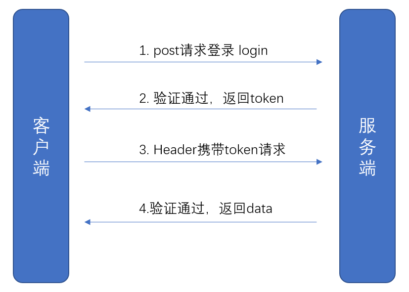
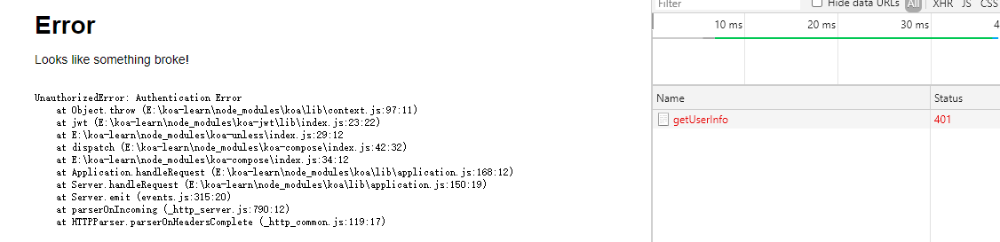

JWT
一个介绍JWT的网站
1、JWT的工作原理

2、JWT的结构
JWT由3个部分组成，分别是Header/Payload/Signature，由这3个部分组合成一个token，比如``
Header部分: 主要规定了token使用的加密方式以及token的运行,比如{ alg: 'HS256', typ: 'JWT' }Payload部分: 主要是用户的一些信息，比如用户名、过期时间等，比如:{ sub: '2019-09-12', name: '小明', admin: true }Signature部分: 由下面计算而得HMACSHA256( base64UrlEncode(header) + '.' + base64UrlEncode(payload), secret )
3、koa集成JWT
安装对应的npm包: npm i koa-jwt jsonwebtoken
koa-jwt: 主要负责的是对请求的拦截，比如约定哪些请求不需要JWT校验，检验tokoen是否正确，校验失败的处理jsonwebtoken: 主要负责JWT的token生成
3.1 集成koa-jwt，约定哪些请求要鉴权
const Koa = require('koa');
const jwt = require('koa-jwt');
const app = new Koa();
// secret为随机字符串
// unless.path配置不需要jwt校验的路径，支持正则，像下面表示以 `localhost:3000`和 `localhost:3000/login`不需要鉴权
app.use(jwt({ secret: 'suijisuiji' }).unless({ path: [/^\/$/, /^\/login/] }));
请求http://localhost:3000/login正常，访问http://localhost:3000/getUserInfo提示401

自定义错误提示
上面截图是koa-jwt默认提示页面，如果我们想要自定义错误提示，可以这么处理
// 要放在 app.use(jwt({ secret: 'suijisuiji' }) 之前
app.use(function(ctx, next){
return next().catch((err) => {
if (401 == err.status) {
ctx.status = 401;
ctx.body = {
code: -9999,
msg: 'token校验失败'
};
} else {
throw err;
}
});
});
app.use(jwt({ secret: 'suijisuiji' }).unless({ path: [/^\/$/, /^\/login/] }));
异常处理要放在app.use(jwt())之前才能生效
3.2 登录接口集成jsonwebtoken
比如登录接口，在用户名+密码验证通过后，我们就生成一个token
router.post('/login', async (ctx, next) => {
const token =jsonwebtoken.sign({ username:'xiaoming' }, 'suijisuiji', {expiresIn: '1d'});
ctx.body = {
code: 0,
data: {
token
}
}
})
上面的 suijisuiji 需要和 jwt({ secret: 'suijisuiji' }) 的字符串保持一致，这样才能验证通过
上面是通过第3个参数设置
{expiresIn: '1d'}来设置1天有效期，也可以在第1个参数设置{ username:'xiaoming', exp: Math.floor(Date.now()/1000)+60*60*24 }效果是一样，但是不能2边都设置
3.3 前端的处理
先请求登录接口，获取到token，然后后面的接口要往headers设置{Authorization: 'Bearer ' + token}
$.post('/login', {name:'xiaming',password:'123456'}).then(res => {
const token = res.data.token;
$.ajax({
type: 'POST',
url: '/getUserInfo',
headers:{
"Authorization": 'Bearer ' + token
},
success: function(data, status, xhr){
console.log(data);
}
});
});
注意:
Bearer不能省不能改，Bearer和token之间有个空格
在headers携带Authorization给接口，koa-jwt就会去验证是否正确，正确才会返回数据